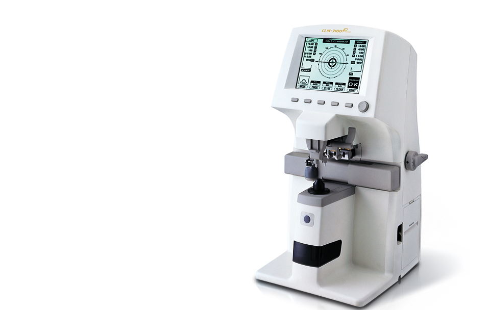

CLM-3100P
더 빠르고, 더 정확하고, 더 쉽게
누진 다초점 렌즈까지 자동으로 측정하는 CLM-3100P
이제 모든 렌즈는 CLM-3100P를 만납니다.
- 
제품소개
- 누진다초점 렌즈 측정 기능
- 이중초첨, 삼중초첨은 물론 누진다초점 렌즈까지 자동 인식하여 스크린에 표시된 안내선을 따라 십자 모양의 타겟을 이동하여 쉽게 측정 합니다.
- PD(PUPILL DISTANCE)측정 (B,C TYPE 한정)
- 위로 향한 PD 센서를 이용하여 사용이 편리하며 좌/우안 동공거리(PD) 측정기능뿐만 아니라 수직 동공거리(VPD)도 측정할 수 있습니다.
- UV (Ultraviolet Rays)투과율 측정(B,C Type 한정)
- 광학 렌즈 및 선글라스의 자외선 투과율을 측정할 수 있고, 막대 그래프로 표시하여 쉽게 확인할 수 있습니다.
제품사양
| 측정 범위 | ||||
|---|---|---|---|---|
| 구면도수 | 0 ~ ±25.00D | |||
| 난시도수 | 0 ~ ±10.00D | |||
| 난시축각도 | 0º ~ 180º (1º 단위) | |||
| 누진도수 | 0 ~ 10 D | |||
| 프리즘도수 | 0 ~ 10 (270º 방향) 0 ~ 4 (나머지 방향) | |||
| 측정 모드 | ||||
| 난시 | -, +, ± | |||
| 프리즘 | Rectangular / Polar / Displacement | |||
| 샘플링 스피드 | 0.016 초 (렌즈 측정 속도) | |||
| 측정파장 | 630 nm | |||
| 렌즈직경 측정범위 | 15 ~ 100mm | |||
| 콘택트렌즈 | Hard and Soft | |||
| 아베지수 | Normal / Mid / Low | |||
| 디스플레이 | LCD Display (320 X 240 LCD Backlight) | |||
| 데이터 출력 | RS - 232C | |||
| Wavelength | e-line : 546.07nm, d-line : 587.56 | |||
| BPS | 9,600 / 19.200 / 38,400 / 57,600 / 115,200 bit | |||
| 크 기 |
|
|||
| 무게 | 5 kg | |||
| 전원 | AC 100 ~ 240V, 50 ~ 60Hz | |||
| 선택 사양 | Printer | PD | UV | |
| CLM-3100A | O | X | X | |
| CLM-3100B | O | O | X | |
| CLM-3100C | O | O | O | |
| CLM-3100D | O | X | O | |
| ㆍPD :Pupillary Distance ㆍUV : UltraViolet ㆍBPS : Bit Per Second 상기 제품의 디자인과 세부 사항은 기능 향상을 위해 사전 예고없이 변경될 수 있습니다. | ||||